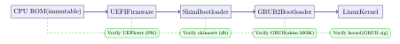

Chapter 15: Hardware Tamper Protection¶
Physical access to a device has long been considered equivalent to full compromise. Hardware security engineering challenges this assumption by making tampering detectable, difficult, or physically impossible. This chapter covers the spectrum of hardware-rooted trust mechanisms, from Trusted Execution Environments to Physical Unclonable Functions and Hardware Security Modules.
15.1 Trusted Execution Environments¶
Definition 15.1 (Trusted Execution Environment (TEE))
A Trusted Execution Environment is an isolated execution context provided by processor hardware that protects code and data confidentiality and integrity from the rich operating system, hypervisor, and other applications running on the same processor. The TEE maintains a trust boundary enforced in hardware.
15.1.1 ARM TrustZone¶
ARM TrustZone partitions the processor into two worlds: the Secure World (TEE) and the Normal World (Rich OS). A hardware bit in each bus transaction determines which world can access a given memory region. The Secure Monitor Call (SMC) instruction is the only crossing point, arbitrated by a Secure Monitor running at EL3.
FIDO2 authenticators and mobile payment credentials are commonly stored in the TEE, where even a compromised Android or iOS kernel can’t extract the private keys. TEE-resident code is called a Trusted Application (TA).
15.2 Trusted Platform Module (TPM 2.0)¶
Definition 15.2 (TPM 2.0)
A Trusted Platform Module (ISO/IEC 11889) is a secure cryptoprocessor providing hardware-rooted trust services: key generation, secure key storage, attestation, sealing, and random number generation. TPM 2.0 (2014) is the current standard; it supports algorithm agility (RSA, ECC, AES, SHA-2/3).
15.2.1 TPM Key Hierarchy¶
| Key | Full Name | Purpose |
|---|---|---|
| EK | Endorsement Key | Unique per TPM; used for attestation; non-migratable |
| SRK | Storage Root Key | Root of the key storage hierarchy; never leaves TPM |
| AIK | Attestation Identity Key | Pseudonymous key used in remote attestation |
| Sealing Key | (derived) | Encrypts data bound to a specific PCR state |
15.2.2 Platform Configuration Registers and Sealing¶
PCRs (Platform Configuration Registers) store cumulative SHA-256 hash digests of firmware, bootloader, and OS components measured at boot time. Each PCR extends as:
The extend operation is one-way and append-only: you can add measurements but you can’t remove or replace them, and you can’t reach a given PCR state without having extended with exactly the right sequence of measurements. A PCR starts at all-zeros; extending with measurement \(m_1\) gives \(\text{SHA-256}(\mathbf{0}^{256} \| m_1)\); extending again with \(m_2\) gives \(\text{SHA-256}(\text{PCR} \| m_2)\). Reordering measurements or substituting any component produces a completely different final PCR value. This means a TPM PCR is really a commitment to the entire sequence of software that ran during boot—not just a set of components.
Sealing binds a secret (e.g., a disk encryption key) to a specific PCR state. The TPM will only unseal it if the current PCR values match the values at seal time, so the secret is unavailable if the boot chain has been tampered with.
Remote attestation extends sealing to a verifier that doesn’t share the device. The flow works as follows: the verifier sends the TPM a fresh random nonce. The TPM constructs a quote—a signed structure containing the current PCR values and the nonce—signed with an Attestation Identity Key (AIK). The AIK’s certificate chains to the TPM’s Endorsement Key (EK), which is burned into the chip by the manufacturer and certified by the TCG Certificate Authority. The verifier checks: that the EK certificate is genuine (device is a real TPM), that the AIK certificate is properly bound to the EK (key is on that real TPM), that the nonce matches (freshness, preventing replay), and that the PCR values correspond to a known-good boot policy. If all checks pass, the verifier can be confident that the attesting machine ran exactly the software stack it claims. This is the mechanism underlying cloud confidential computing attestation in Intel TDX, AMD SEV-SNP, and ARM CCA.
Example 15.1 (BitLocker TPM Sealing)
Windows BitLocker seals the Volume Master Key to TPM PCRs 0, 2, 4, 7, and 11 (covering firmware, option ROMs, bootloader, Secure Boot policy, and BitLocker access control). Any firmware update or boot-path change causes PCR mismatch, preventing unseal until the user authenticates with a recovery key.
15.3 Secure Boot Chain¶

UEFI Secure Boot uses a key database (db) of trusted certificates and a deny list (dbx) of revoked hashes/certificates. The Platform Key (PK) is the root of trust held by the OEM; the Key Exchange Key (KEK) lets OS vendors update db and dbx. On Linux, Microsoft signs the shim bootloader; shim verifies GRUB using a Machine Owner Key (MOK) stored in NVRAM.
When a user disables UEFI Secure Boot in the firmware settings, the entire chain of trust from that point forward collapses. The UEFI firmware will load any bootloader regardless of its signature, which means an attacker with brief physical access can boot a live USB containing a modified kernel or a rootkit installer. With a rootkit in place before the legitimate OS boots, any subsequent software-based integrity checks are meaningless—the rootkit controls the environment those checks run in. This is why enterprise device management policies (Microsoft Intune, Jamf, Google BeyondCorp) report Secure Boot status as a health signal and deny network access to machines with it disabled. The TPM’s PCR 7 specifically records the Secure Boot policy state, so attestation-based network access control can detect if Secure Boot was disabled even after the machine was re-enabled.
Shim exists because of a practical key management problem. Microsoft’s KEK controls updates to the UEFI db, and most consumer and enterprise hardware ships with Microsoft’s certificate in db as the only trusted signing authority. Linux distributions can’t independently add their own certificates to every OEM’s key database. The solution is a small Microsoft-signed stub bootloader—shim—that serves as a trust extension point. Shim carries a compiled-in certificate (the distribution’s own key), verifies the GRUB2 binary against it, and then hands off. The Machine Owner Key (MOK) mechanism lets administrators add their own keys to shim’s trusted list without going through Microsoft. This is essential for custom or unsigned kernels, driver modules signed by local keys, or custom hardware. The tradeoff is that shim is a single point of trust: compromising the shim binary or the signing key that Microsoft uses to sign it would break the entire Linux Secure Boot chain, which is why the 2020 BootHole vulnerability (CVE-2020-10713), a buffer overflow in GRUB2’s config parser, required a coordinated dbx update across essentially every UEFI system in existence.
15.4 Physical Unclonable Functions¶
Definition 15.3 (Physical Unclonable Function (PUF))
A PUF exploits unavoidable manufacturing process variations to produce a unique and unpredictable response for each challenge. The response is reproducible on the same device but infeasible to clone or predict from device specifications alone. Formally, a PUF is a function \(f: \{0,1\}^n \to \{0,1\}^m\) implemented in uncontrollable physical variation.
15.4.1 SRAM PUF¶
SRAM cells power up to a “preferred” state (0 or 1) determined by transistor mismatch. Reading SRAM immediately after power-on yields a unique bitstring—the SRAM PUF fingerprint. Across power cycles on the same chip the fingerprint is stable (with a small error rate corrected by fuzzy extractors), and no two chips produce the same fingerprint.
15.4.2 Arbiter PUF¶
A race condition between two signal paths with nominally identical length, caused by manufacturing variation in gate delays, determines a 1-bit response for each challenge (path selection input). Chaining \(n\) stages produces \(2^n\) challenge-response pairs.
15.4.3 Challenge-Response Pair Enrollment and Aging¶
PUF deployment requires an enrollment phase during manufacturing. The device is placed in a controlled environment, and a large set of challenges is applied to the PUF. The corresponding responses are measured, and the (challenge, response) pairs—called CRPs—are stored securely in a server-side database. In the field, authentication works by the server sending a challenge the device has never seen (to prevent replay) and comparing the device’s response to the stored CRP. Strong PUFs like the arbiter PUF can have exponentially many CRPs, making exhaustive CRP theft impractical. Weak PUFs like SRAM PUFs have a fixed-size fingerprint used for key generation rather than per-challenge authentication.
Aging is the adversary of PUF reliability. Semiconductor transistors degrade over time via Hot Carrier Injection (HCI) and Bias Temperature Instability (BTI), which cause the threshold voltages of transistors to drift. An SRAM cell that powered up to “1” at manufacturing might drift toward “0” after years of use, causing bit flips in the PUF fingerprint. The error rate of a freshly manufactured device is typically 1–5%; after 10 years in the field at elevated temperatures, it can rise substantially. Fuzzy extractors handle this by applying an error-correcting code (ECC) during enrollment: the enrollment process identifies which bits are “noisy” (unreliable across multiple measurements) and constructs helper data that allows the ECC decoder to correct the expected bit flip errors on subsequent readings without revealing the underlying secret. The helper data is safe to store in non-volatile memory—it leaks nothing about the PUF response because it was designed so that the corrected output is information- theoretically independent of the helper data. However, if aging pushes the error rate above the ECC correction capacity, key reconstruction fails, which can lock the device out of its own secrets. This is why PUF-based systems are designed with comfortable margins between the expected aging-induced error rate and the ECC correction capacity, and why accelerated aging tests during qualification are essential.
15.4.4 Use Cases¶
-
Device fingerprinting: authenticate a specific chip without pre-provisioned keys.
-
Key generation: derive a cryptographic key from the PUF response at runtime; the key is never stored, only reconstructed on demand.
-
Anti-cloning: prove a hardware device is the genuine article.
15.5 Hardware Security Modules¶
Definition 15.4 (Hardware Security Module (HSM))
An HSM is a dedicated cryptographic device providing key management, key storage, and cryptographic operations within a tamper-resistant hardware boundary. HSMs are evaluated against FIPS 140-3 (2023) or Common Criteria.
| FIPS 140-3 Level | Security Requirements |
|---|---|
| Level 1 | Software-only; no physical requirements; approved algorithms only |
| Level 2 | Tamper-evident seals; role-based authentication |
| Level 3 | Tamper-response: zeroize keys on intrusion; identity-based auth |
| Level 4 | Complete physical protection; detect environmental attacks (voltage, temp) |
Commercial HSM examples: Thales Luna Network HSM (Level 3), AWS CloudHSM (Level 3), YubiHSM 2 (Level 3, compact USB form factor). When an HSM detects tampering it zeroizes all stored keys, making the device useless to an attacker even after physical extraction.
15.6 Anti-Tamper Techniques¶
Hardware Anti-Tamper Mechanisms
-
Epoxy potting: security-critical circuitry is encased in opaque epoxy; removal destroys the component.
-
Mesh wires: a fine conductive grid covers the chip die; cutting the mesh to reach internals breaks continuity, triggering zeroisation.
-
Active shields: top-layer conductors on a chip carry random bit patterns; any attempt to probe underlying layers shorts the shield and is detected.
-
Voltage/temperature monitors: circuits that trigger key erasure if supply voltage or die temperature exceeds safe bounds (targeting glitch attacks).
15.7 Cold Boot Attacks¶
Cold Boot Attack
DRAM retains data for seconds to minutes after power is removed, especially when cooled with compressed air or liquid nitrogen (which extends retention to minutes or hours). An attacker reboots a locked or sleeping computer and boots from USB, dumping RAM. Encryption keys found in memory compromise full-disk encryption.
Defence: require a TPM+PIN or TPM+USB key so that the VMK (Volume Master Key) is never held in plaintext RAM; use memory encryption (AMD SME); configure BIOS to disable USB boot; enable pre-boot authentication that clears the key from RAM on lock.
15.8 Memory Encryption¶
Definition 15.5 (AMD SME and SEV)
AMD Secure Memory Encryption (SME) encrypts all DRAM using a 128-bit AES key stored in the CPU, making cold-boot attacks impractical. AMD Secure Encrypted Virtualization (SEV) extends this by providing per-VM encryption keys, so a compromised hypervisor can’t read guest VM memory.
Intel Total Memory Encryption (TME) provides analogous DRAM encryption from the CPU memory controller, transparent to software.
15.9 JTAG Security¶
JTAG (IEEE 1149.1) debug ports provide direct access to processor registers, memory, and peripheral state. In production devices, JTAG must be disabled:
-
Permanently disable via fuse programming (one-time programmable bits).
-
Use secure debug: JTAG access requires cryptographic authentication (a challenge-response protocol with a device-unique key), enabling authorised field debugging without opening an attack surface on unmodified devices.
15.10 Hardware Security Mechanisms Comparison¶
| Property | TEE | TPM | HSM | PUF |
|---|---|---|---|---|
| Key storage | Yes (volatile) | Yes (NV) | Yes (NV, zeroize) | No (derived) |
| Physical tamper resist | Moderate | Moderate | High (FIPS 140-3 L3+) | Inherent |
| Remote attestation | Yes (proprietary) | Yes (standard) | Limited | Yes (CRP) |
| Crypto performance | High | Low | Very high | N/A |
| Standard | GlobalPlatform | ISO/IEC 11889 | FIPS 140-3 / CC | No formal std |
| Clonability | Possible (soft copy) | No (EK bound) | No | No (by design) |
| FIPS validated | No | Yes (2.0) | Yes (Level 1–4) | No |
15.11 Exercises¶
Exercise 15.1
Design a remote attestation flow using TPM 2.0 for a cloud virtual machine. Your design must: (a) specify which PCRs are measured and what they cover (firmware, bootloader, kernel, initrd); (b) describe how the Attestation Identity Key (AIK) proves the attestation came from a genuine TPM without revealing the device’s Endorsement Key; (c) explain how a verifier (attestation service) validates the PCR quote; (d) identify what an attacker can and cannot do if they compromise the hypervisor but not the guest TEE.
Exercise 15.2
Compare HSM and TEE for the following key storage scenarios, justifying your recommendation in each case: (a) signing keys for a certificate authority issuing millions of TLS certificates per day; (b) FIDO2 private keys on a smartphone; (c) payment terminal PIN encryption keys subject to PCI HSM requirements; (d) a secrets manager for a Kubernetes cluster running on bare metal.
Exercise 15.3
A laptop uses BitLocker with TPM-only mode (no PIN). An attacker steals the laptop while it is in sleep (S3) mode. (a) Describe the cold boot attack procedure. (b) Explain why TPM-only mode (without PIN) does not protect against this attack. (c) How does enabling the BitLocker pre-boot PIN improve security? (d) How does AMD SME change the attacker’s capabilities if enabled?
Exercise 15.4
Explain how an SRAM PUF can be used to derive a symmetric encryption key without ever storing the key in non-volatile memory. Your answer should address: (a) the role of a fuzzy extractor in handling the PUF’s unstable bits; (b) how helper data (stored in NVM) enables key reconstruction without revealing the key; (c) the security consequence of an attacker obtaining the helper data; (d) why identical manufacturing processes (e.g., two chips from the same mask) still produce different PUF responses.
Exercise 15.5
An IoT firmware update server signs firmware images with an RSA-2048 private key. The matching public key is burned into the device’s secure boot key database. An attacker gains access to the signing server and extracts the private key. (a) What is the immediate impact? (b) Describe the revocation mechanism available via UEFI Secure Boot’s dbx. (c) Explain why revocation via hash is more granular than revocation via certificate, and when each is preferable. (d) Propose a key ceremony procedure that limits the exposure window if the signing key is compromised.